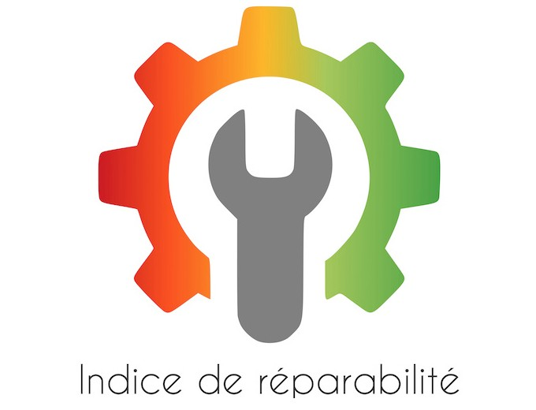

"

<meta property="og:image" content="https://cdn.pixabay.com/photo/2014/04/03/10/38/scales-310962_1280.png">

L'émergence de l'indice de réparabilité, instauré en 2021 en vertu de la loi de lutte contre le gaspillage et pour l'économie circulaire, représente une tentative ambitieuse de promouvoir la durabilité et la responsabilité environnementale dans le domaine des produits électriques et électroniques. En effet, cette mesure vise à informer les consommateurs sur la facilité de réparation de certains produits, tout en incitant les fabricants à concevoir des produits plus durables. Cependant, derrière ces intentions louables, des enjeux complexes et des défis émergent, tant du point de vue du consommateur que du producteur. Cette étude  nous a permis de nous pencher d'abord sur la nature même de l'indice de réparabilité, explorant ses objectifs, son calcul, et les évolutions qui ont marqué sa mise en œuvre depuis 2021. En outre, nous avons pu examiner les difficultés rencontrées, notamment du point de vue du consommateur et du producteur, mettant en lumière des lacunes majeures dans la compréhension et l'application de cet indice. Aussi, nous avons pu envisager des pistes d'amélioration et d'évolution pour rendre cet indice de réparabilité plus transparent, précis et efficace, et avons exploré les implications d'un contrôle plus strict et d'une participation accrue de toutes les parties prenantes.
